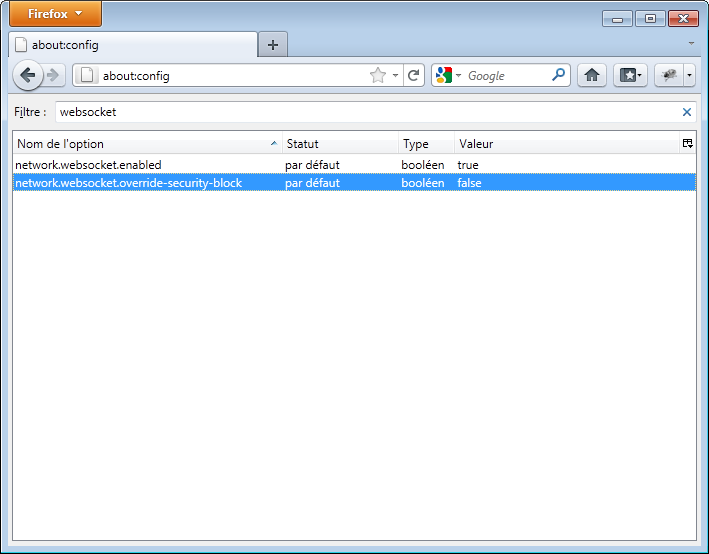

Par défaut, Firefox n'active pas les Websocket. Le jeu fonctionne (grâce à un fallback en flash), mais les performances ne seront pas optimales. Nous vous invitons donc à les activer : voici la marche à suivre pour Firefox 3.6 ou ultérieur.
1. Accédez à la page "about:config" dans un onglet de Firefox.
2. Acceptez la confirmation qui vous est proposée (ne vous inquiétez pas, tout va bien se passer !) :
3. Dans le champ Filtre, tapez "websocket".
4. Double-cliquez sur la deuxième entrée qui s'affiche. Le "false" devient alors "true".
5. Profitez d'un Pongroulette avec des performances bien améliorées... Bon jeu !
